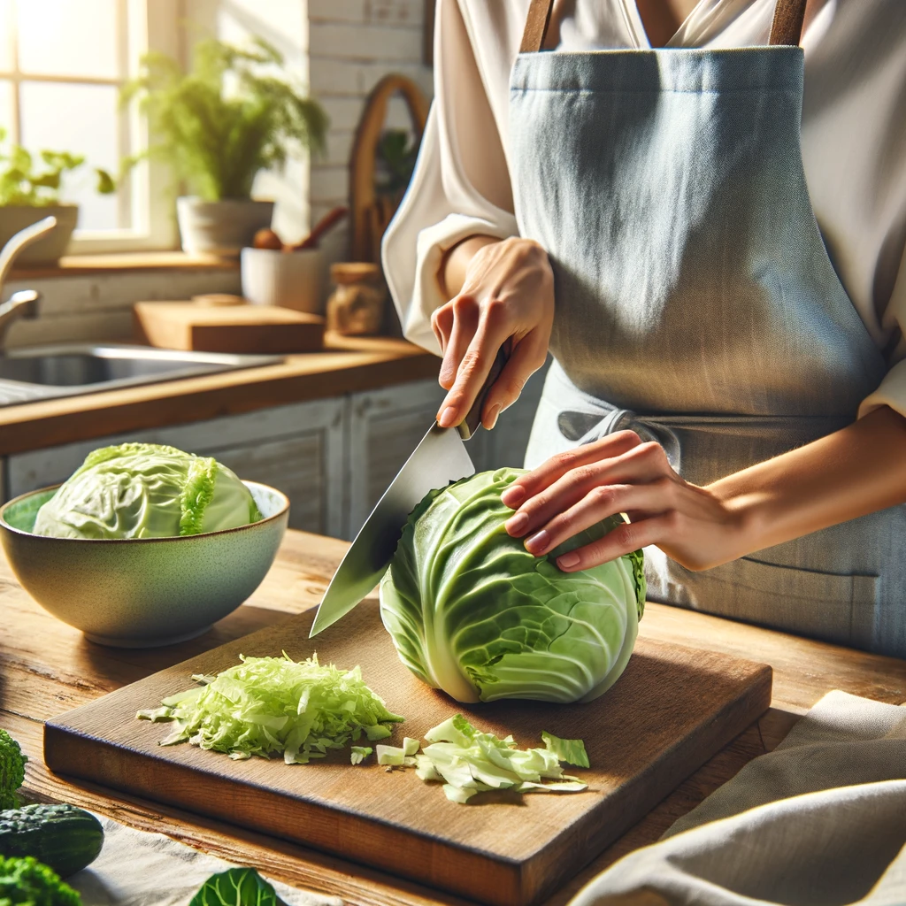
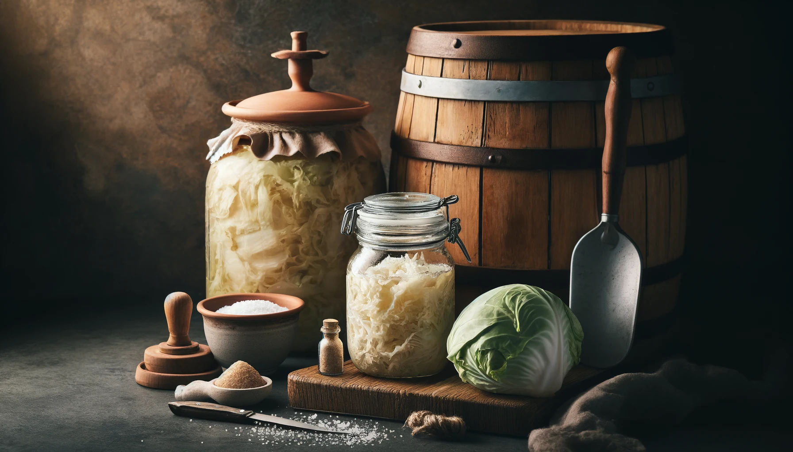

Homemade Sauerkraut
Click here to learn more about
Science behind Homemade Sauerkraut
ldquo“
Hey hot summer! Feeling the heat? How about we ditch the processed snacks and whip up a batch of something delicious and refreshing? Sauerkraut!

